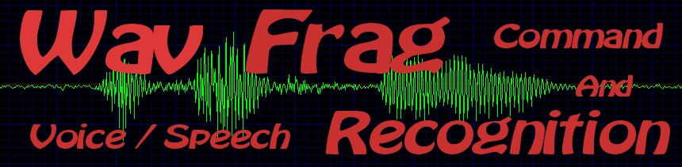

[ Home ] [ Recognition ] [
Training ] [ Commands
] [ Technology
] [ Contact ]
WavFrag Voice Recognition,
Commands
WavFrag recognizes tens
even hundreds of commands. One can easily train new ones, with one or
two uttering speaking) of that command. Assigning an action to a
word is easy. In
the action dialogue one can select an uttering, and a matching action.
The action can be anything from executing a program, switching between
windows, terminating / closing
the active program, or displaying an image. One can also command
WavFrag to
minimize, maximize, close, or to go to sleep. One can send
any
keystroke(s) to the currently active program. For more information on
sending keystrokes, see the keystrokes page.
|
WaveFrag
may
ask for confirmation on actions you configure. The
confirmation dialog is a windows Yes / No dialogue, and it is voice
actived. You can say 'YES' to dismiss it with a 'yes' answer, or 'NO'
to
dismiss it with a 'no' answer. The word 'okay' 'OK', or the word
'cancel' will work just as expected.
Naturally WavFrag is not limited to simple yes and no, answers.
In the action's configure dialog you can assign any word or any
uttering to send any key or any command to the currently active
application.
|
One can make WavFrag multilingual just by training the words in a
foreign language. WavFrag has no lexical or linguistic knowledge, so
the uttering can be trained in any language. Just to show you the
versatility, an uttering can be any noise like a whistle or a clap.
Below is the ACTION configuration dialog, where one can
configure a command (or action). The example shown is named
'Close program' and it is configured to close the active program. There
are three utterings (words) configured, which are assigned to this
particular action. The utterings are: "Close Active Program" or "Close
Window" or "Exit Program" and they all execute the action assigned by
this
dialogue, which is to close the currently active program. (Note the
selected radio button in the lower right corner)
The following commands can be assigned within this dialog:
| Execute
Command: |
|
Execute arbitrary
program. In the 'Command:' text box one may enter any command like
'Firefox' or 'Iexplore' alternatively one can browse to any command
that is installed on the system.
The command can have arguments, for example when entering Firefox
or Internet Explorer one can enter on the command line the website to
surf to.
|
Open Document:
|
|
This is the
standard interface to open a document. The program will be autmatically
chosen from the file type of the document. For example HTML documents
will be opened by the current web browser, word documents will be open
by word, or by open office.
|
Send
a string to Active
window:
|
|
An arbitrary string
can be sent to the currently active window. All the letters,
numbers and punctuation marks will be sent verbatim to the active
window. special characters will be sent according to the keyboard
translation rules. The following keystrokes are just examples, for a
full list visit the keystrokes page. For
example the string VK_ENTER - sends the ENTER key, VK_TAB sends
the TAB key, VK_BACKSPACE - sends the Backspace key.
|
Show an Image:
|
|
This command or
action can be configured to show an image. The images is shown full
screen, with a gray background. This is useful for presentations. One
can call the next image, the previous image, then close the image by
voice command which allows for an easy and meaningful presentation. One
can train arbitrary words to execute the show in this action.
|
Put
WavFrag to sleep:
|
|
Puth
the WavFrag program
to non listening mode. To wake WavFrag say the command that is
configured under a 'Wake up WavFrag' One can train arbitrary
words to execute the sleep / wake action. Default uttering for this
action is 'Go to Sleep'
|
Wake up WavFrag:
|
|
Gets WavFrag out of sleep
back into active listening mode. Default uttering for this action is
Wake Up' |
Yes
on message box AND no
on message box:
|
|
When
the modal dialog is up
with a yes or no question, or an okay button, WavFrag accepts a voice
command to dismiss the dialog with a yes or no answer. Under this
selection
one can train arbitrary words to act as a yes or no. In fact, one can
make WavFrag multilingual just by training the yes or no action in a
foreign language.
|
Minimize WavFrag Maximize
WavFrag
close WavFrag
|
|
These commands
control the state of the WavFrag window. When closing WavFrag, a
confirmation dialog will show. Answering yes will dismiss the WavFrag
applicaion and voice recognition is stopped.
|
Enable
actions:
|
|
By default actions
are disabled, so unintentional utterings and recognition does not
affect the system. Enableing the actions is as simple as pronouncing
'enable actions'. One can train arbitrary string to act as the 'enable
actions' command. the default is 'enable actions' and 'enable commands'.
|
Activate next program AND
Activate previous program
|
|
With these actions one can
switch between windows. The 'activate next' action will activate the
next least recently used application. The 'activate previous' program
will activate the most recently used program. These actions are similar
to pressing all tab on Windows.
|
Close
currently active
program
|
|
This
will close the
currently active program. It is similar than the ALT-F4 or file / close
menu action.
|
Shutdown Computer
|
|
This action will shut down
the computer. A confirmation dialog is shown, which one can dismiss
with 'no' for no action, and 'yes' to shut down the computer.
|
With all this configurability, WavFrag can do most everyday
tasks with the computer.

|